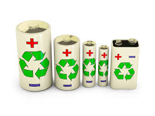
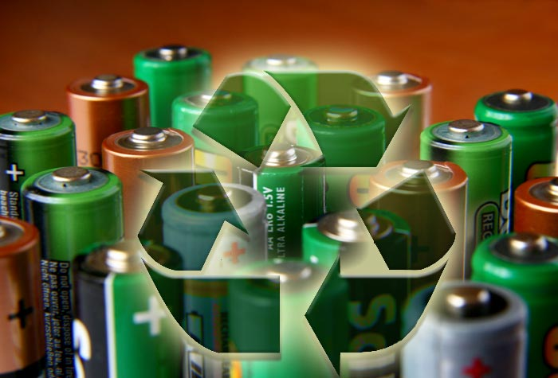
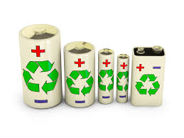
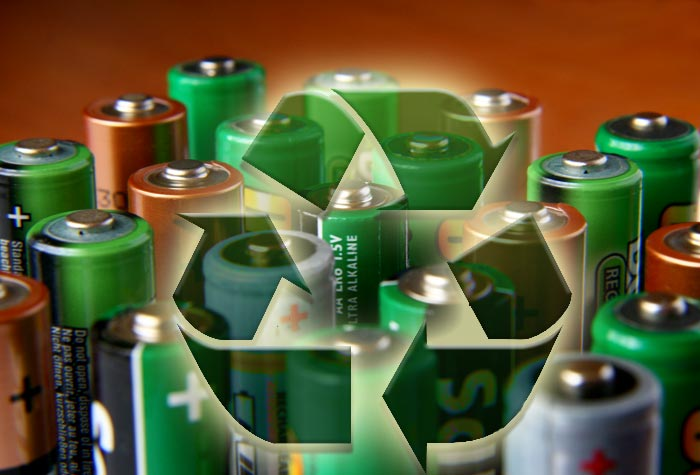

El Poder de Reciclar Pilas
Un pequeño acto para un gran impacto: Protege nuestro planeta de los residuos tóxicos.
Conoce la Legislación 



Impacto Global: ¿Qué Contaminan?
Mercurio (Hg)
Una pila puede contaminar **600,000 litros de agua**.
Cadmio (Cd)
Cancerígeno que se acumula en el suelo y entra a los cultivos.
Plomo (Pb)
Afecta el desarrollo cerebral, especialmente en la infancia.
Riesgos Específicos a la Salud Humana
Daño Neurológico
El mercurio y el plomo afectan el sistema nervioso.
Problemas Renales
El cadmio afecta directamente los riñones.
Peligro por Ingestión
Las pilas de botón pueden causar quemaduras internas.

Tipos de Pilas Comunes y sus Riesgos
Pilas Alcalinas
Afectan la fertilidad del suelo.
Litio
Riesgo de incendio o explosión.
Pilas de Botón
Altamente tóxicas y peligrosas para niños.

¡Desmintiendo Mitos Comunes!
Mito: Guardarlas en una botella es seguro
Falso: La corrosión sigue ocurriendo dentro.
Mito: Las alcalinas no contaminan
Sí contaminan al liberar zinc y manganeso.
Mito: Todas se reciclan igual
Cada tipo requiere procesos industriales diferentes.

El Proceso de Transformación
Colección
Recolección segura en puntos autorizados.
Clasificación
Separación por tipo químico.
Procesamiento
Pirometalurgia o hidrometalurgia.
Recuperación
Extracción de metales reutilizables.
Beneficios a Largo Plazo
Ahorro de recursos: Se recuperan litio, cobalto y níquel.
Seguridad Ambiental: Evita la contaminación del suelo y agua.
Economía Circular: Se reintegran materiales en la industria.

Contexto Legal y Global del Reciclaje
Responsabilidad Extendida
Los fabricantes deben encargarse del reciclaje final.
Metas Globales
La UE exige recolección del 45–65%.
E-Waste
Las baterías modernas forman parte de los residuos electrónicos.
Guía Práctica: ¿Cómo Reciclar Pilas Correctamente?
1. No las mezcles con basura común
Evita daños en el relleno sanitario.
2. Guarda las pilas en un contenedor seguro
Puede ser un frasco de vidrio o bote resistente.
3. Llévalas a un centro de acopio
Busca puntos certificados de recolección.
4. Nunca las abras o quemes
Libera químicos extremadamente tóxicos.